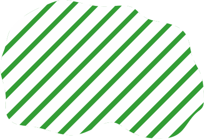

Велике розселення слов'ян (V – IX ст. н. е.)
Племена і племені союзи
| волиняни | |
| деревляни | |
| поляни | |
| сіверяни | |
| тиверці | |
| уличі | |
| хорвати |
Ареали розселення слов'ян
| райони розселення слов'ян (V ст.) | |
|  | терени, опановані слов'янами (V-VI ст.) |
| терени, опановані слов'янами (VI ст.) | |
| терени, опановані слов'янами до IX ст. | |
| терени, частково опановані слов'янами до IX ст. |
| . |
| Напрямки розселення слов'ян (VI-IX ст.) |